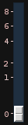
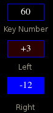
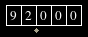
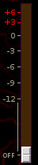

Glossary
HomeADDSR Envelope
 A 5-stage envelope
A 5-stage envelope- Attack
- Decay1, initial decay
- Decay2, second decay
- Sustain
- Release
Gate button. In gate mode the envelope cycles through the Attack, Decay1 and Decay2 segments and then holds at the Sustain level until the key is released. Once the key is released the envelope immediately enters the Release stage regardless of it's current state.
If Gate is disabled the envelope is in "Trigger" mode. In trigger mode the envelope cycles through the Attack, Decay1, Decay2 and Release segments no matter how long the key is depressed. The Sustain stage is skipped.
Init, initialize envelope
Copy, copy envelope to clipboard.
Paste, paste envelope from clipboard. The envelope may be copied
and pasted to ADDSR envelope, even across synths and synth-types.
X1, button sets zoom level. Zooming allows finer grained adjustments to the attack time. The possible zoom levels are:
- X1
- X10
- X100
Envelope Segment Time Slider
Most envelope time sliders are non-linear. This is a compromise between maximum possible time and resolution. The sliders are finer-grained for short durations then for longer duration.
Multi State Button (MSB)
A Multi State Button is a button which may be in two or more states. Left-clicking advances through the states, right-clicking moves to the previous state. In most cases once the button reaches its final/initial state, further clicking wraps the state to the opposite end.
Operator
In FM synthesis an operator is an integrated oscillator and envelope generator. Operators may function either as a modulator or a carrier. Modulators do not directly contribute to the instruments output. In practice operators may differ wildly in terms of the oscillator waveform (often sine wave only), envelope capabilities, and other modulation features, such as keyboard scaling, LFO, and velocity.

Synth ID or "SID"
Each active synth is assigned a unique identification of the form
stype_n
Where stype is the synth type and n is an unique serial number. No two synths will have the same SID and specifically no two synths will have the same serial number. The serial number is useful in determining the relative creation times of two synths. Synths with higher serial number may serve as inputs to those with lower numbers, but not the other way around.
Synth
The term synth is heavily overloaded. On the client side synths come in three flavors:
- Synth - a playable instrument, as in a synthesizer
- Effect - an audio processor such as a delay line or reverb
- Controller - a control rate processor or generator, such as an LFO
When used by itself the word "synth" may apply to any one of these three usages, hopefully the context will make it clear which synth type is intended.
SuperCollider defines another separate, but related, usage for the word "Synth". Technically Llia synths are proxies for synth objects on the SuperCollider server. Effect and Control synths correspond directly one-to-one with server sides synths. Instrumental synths may correspond to several server side synths depending on key mode, voice count, and the number of notes playing.
Fortunately for the most part these distinctions may largely be ignored. Unless explicitly stated otherwise, the term synth applies to a Llia client side object and will be one of the three types above.
Tumbler Widget
A tumbler is a set of numeric multi state buttons. Left clicking any digit increments it, right-clicking decrements it. Whenever a digit is incremented past 9 or decremented below 0, the digit wraps around.
It would be nice to have the digits carry/borrow whenever they overflow. At the moment they do not.
Volume Slider
Most audio amplitude values are set with a volume slider. These sliders are calibrated in db and have non-linear response.
There are several distinct ranges. For positive values the slider is discrete and may be either +3 or +6 db. Roughly half of the slider is dedicated to the range 0db to -12db. Below -12db the attenuation falls off at a quicker rate to -48db just above the bottom. At the very bottom the attenuation is -∞